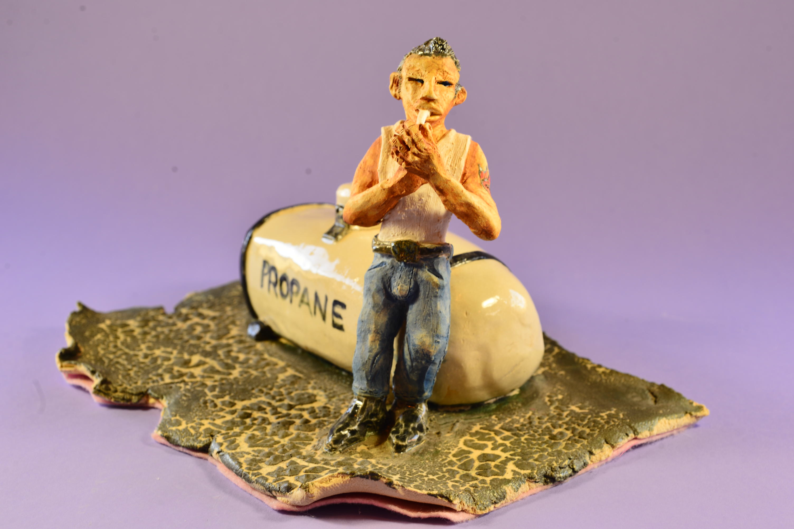
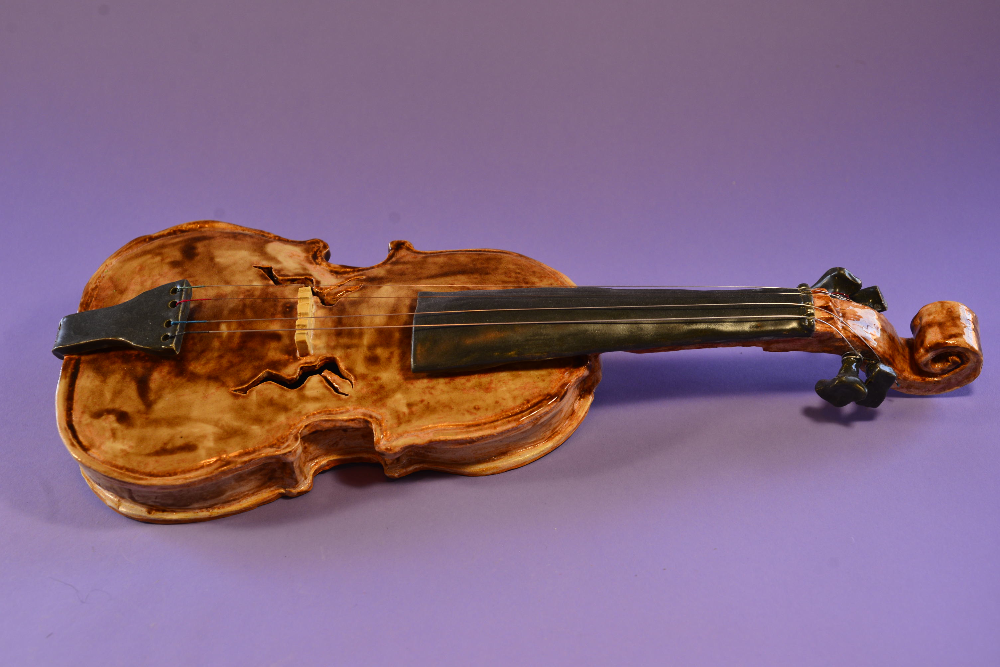
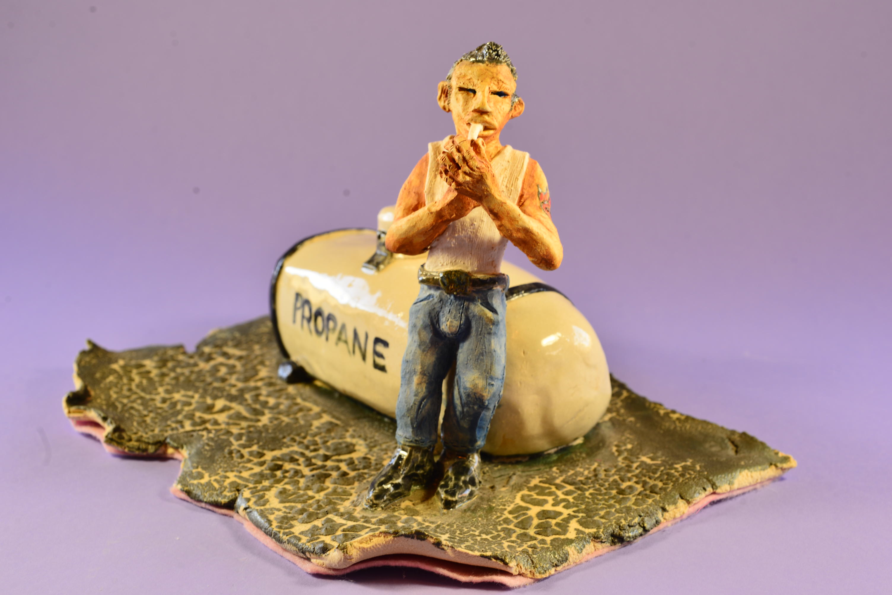
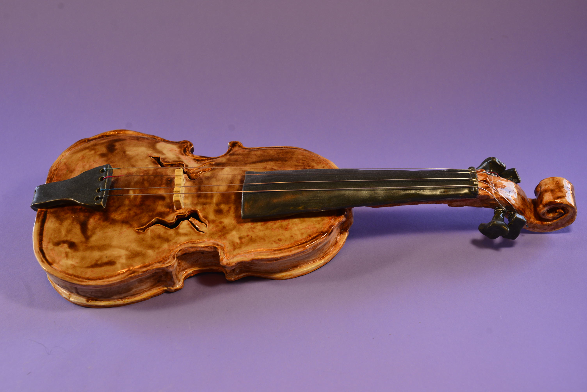
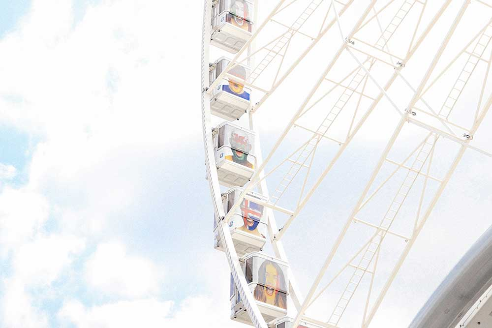
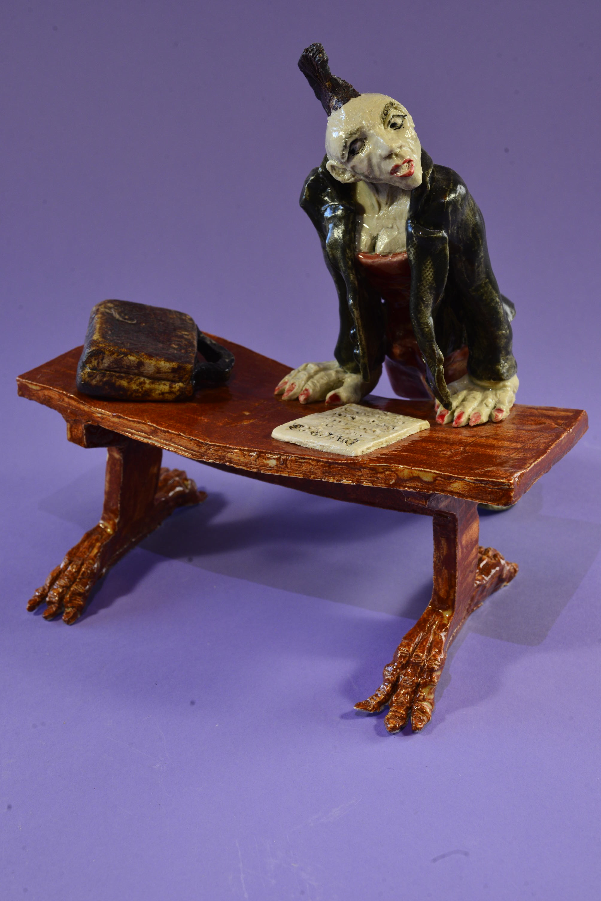
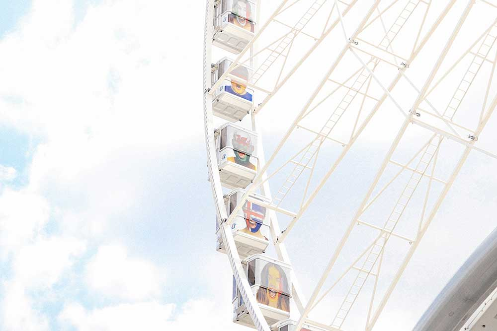
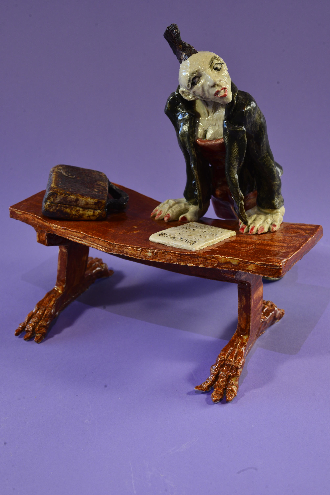

Tricia A. Ogilvy
I love unusual characters and story. I have been a working actress in New York and LA, a writing fellow at the American Film Institute in Hollywood and have written five screenplays and a novel, “Candyland,” under the name T.A. Mulligan. Recently, I branched out and wrote a libretto for an opera, “The Swamp Opera.”(If you’re a composer, let’s have lunch!)
Incorporating story into sculpture is called “narrative sculpture.” My pieces always include a figure; therefore I do “narrative figure sculpture.” I have been working in clay for about sixteen years, beginning at a local civic arts program. Initially, I studied the figure, then studied with other teachers to learn different techniques. Restless, I wanted to break out and express my own ideas. Now, having my own studio allows me to explore my penchant for the comical and bizarre.
Regarding clay itself, working with it is a meditative exercise. The tactility, the smell, the experience makes time stop. I feel focused and fully immersed. I love this aspect of the medium.
I hope you enjoy my work.
Thank you.

 





 


